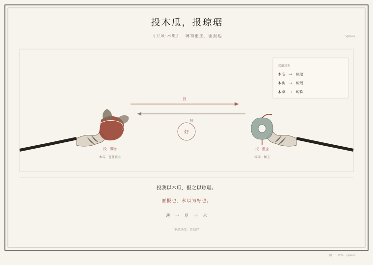
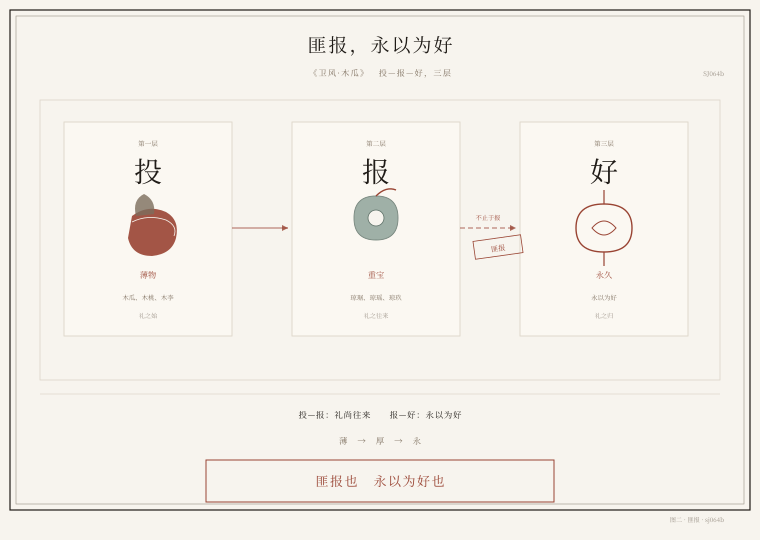

第六十四篇 木瓜
卫风 · 之十 SJ064
朗读 · 普通话
依经文正文朗读，句读从文；不配乐、不改速、不加拖腔。全库同一音色（豆包 TTS），非播音员录制。
一 解题
诗三判：
- 谁在说：受赠的人。可能是卫人，受了齐桓公救而封之、遗之车马器服的大恩，想厚报而不可得；也可能是男女相赠答中的一方，受人之赠，欲以重宝相报。
- 说什么事：你投我木瓜、木桃、木李，我报你琼琚、琼瑶、琼玖；这仍不敢算报答，只想永远结好。
- 为何编在此：卫风最后一篇。前《有狐》写「无衣不能成家」，此篇写「投赠可以成好」；卫风从「贫」写到「礼」，从「无家」写到「结好」，收在「永以为好」。卫风十篇，至此收卷。
《毛序》：「《木瓜》，美齐桓公也。卫国有狄人之败，出处于漕，齐桓公救而封之，遗之车马器服焉。卫人思之，欲厚报之，而作是诗也。」
朱子《诗集传》：「比也。木瓜，楙木也，实如小瓜，酢可食。木桃、木李，皆木也。琼，玉之美者。琚，佩玉名。玖，玉名。言人有赠我以微物，我当报之以重宝，而犹未足以为报也，但欲其长以为好而不忘耳。疑亦男女相赠答之辞，如《静女》之类。」
本库的看法：《木瓜》是一首「投之以薄、报之以厚，而犹不足以为报」的诗。
它最要紧的一转，在「匪报也」三字：投赠与回赠，本来是社会交换；「匪报」把交换打开了，「永以为好」才落下来。不是还债，是结好；礼的极点，是永以为好。
先辨三事：木瓜，不是今之番木瓜，是楙木的果实，如小瓜，酸可食；琼琚，不是「琼做的琚」，琼是美玉之名，琚是佩玉；报，不是报复，是回赠。
二 经文
第一章
投我以木瓜，报之以琼琚。匪报也，永以为好也。
第二章
投我以木桃，报之以琼瑶。匪报也，永以为好也。
第三章
投我以木李，报之以琼玖。匪报也，永以为好也。
分章：三章，章四句。
三 韵读
| 一 |
瓜、琚；报、好 |
鱼、号（平去通押） |
| 二 |
桃、瑶；报、好 |
豪、宵、号（平去通押） |
| 三 |
李、玖；报、好 |
之、号（上去通押） |
「瓜」古音孤，「玖」古音几；「好」郑笺「呼报反」，去声。三章都是「投—报—好」一组韵：前两句押物，后两句押心。物换，韵换，心不变。
四 字义与名物
字义
- 投——投赠、赠送；不是「投掷」。
- 木瓜——楙木的果实，如小瓜，酸可食；不是今之番木瓜。
- 报——回赠；不是「报复」。
- 琼——玉之美者；美玉之名。
- 琚——佩玉名；琼琚是美玉制成的佩玉。
- 匪——通「非」，不是。
- 永——长、永远。
- 好——结好、友好；郑笺「为好，呼报反」，去声。今读
hǎo，义为「结好」。
- 木桃——可食之木果；不是今之桃。
- 木李——可食之木果；不是今之李。
- 琼瑶——美玉。
- 琼玖——玉名；疏谓「玖，石次玉」。
- 苞苴——包裹果实的礼；孔子曰「吾于《木瓜》，见苞苴之礼行」。
- 遗——赠送；毛序「遗之车马器服」，读 wèi。
- 厚报——厚厚地回报。
- 美——赞美；毛序「美齐桓公」。
- 封——封卫；齐桓公城楚丘以封卫。
- 漕——卫地；卫戴公出处于漕。
- 狄——狄人；卫为狄人所败。
名物
- 木瓜、木桃、木李——三种可食之木果；以苞苴裹之而投赠。
- 琼琚、琼瑶、琼玖——三种佩玉、美玉；以报微物。
- 苞苴——包裹果实的苇、茅之类；投赠之礼的外形。
- 投、报——赠答之礼；一往一来。
五 今译
第一章
你投赠我木瓜，我回赠你琼琚。这不是报答，是想永远结好。
第二章
你投赠我木桃，我回赠你琼瑶。这不是报答，是想永远结好。
第三章
你投赠我木李，我回赠你琼玖。这不是报答，是想永远结好。
说明：「投」今译作「投赠」，不作「扔」；「报」今译作「回赠」，不作「报复」；「匪报」今译作「这不是报答」，取「不敢以为报」一义；「好」今译作「结好」。
六 章旨
一章：木瓜—琼琚。
木瓜是薄物，琼琚是重宝；「投」一薄，「报」一厚。厚报还不算报，所以说「匪报也」；不把回赠当终点，才说「永以为好也」。
二章：木桃—琼瑶。
物换，礼不换；投的仍是可食之木果，报的仍是美玉。二章复沓，不是重复，是把「薄—厚」的关系再说一遍。
三章：木李—琼玖。
三章只换六个名词，最后都收在「永以为好」。三章下来，「投」是起，「报」是中，「好」是归；报不是终点，好才是。
三章合看：投—报—好，三层。
第一层是礼，第二层是厚报，第三层是结好。礼尚往来，只到第二层；「匪报也，永以为好也」，才到第三层。毛序说卫人受齐桓大恩，欲厚报而不能；诗设为「投—报」之辞，「匪报」正见其不能报，「永以为好」是唯一能报的。朱子说男女赠答，微物重宝，犹未足以为报，但欲长以为好；情好之深，也在这一层。
七 诗教
- 比：朱子标「比也」，以投赠之薄物、回赠之重宝，比人之受恩与欲报。毛传不标兴，只释名物；本库从朱子，读作比。
- 观：观「礼」——投赠有苞苴，回赠有玉佩；观「报」不等于「还债」——报是礼，匪报是义；观「薄物重宝」如何成为「结好」；观卫人思齐桓、欲厚报而不能的历史。
- 群：可与受恩者同群，与赠答者同群，与一切「受人一点好，想还他一生好」的人同群。
- 怨：此诗无怨，只有「美」与「好」。毛序「美齐桓公」，朱子「男女赠答」，两读都在「好」上；不是怨诗，是结好之诗。
八 分寸与边界
- 不可把「木瓜」当番木瓜。木瓜是楙木果实，如小瓜，酸可食；番木瓜是另一物。
- 不可把「木桃、木李」当桃、李。朱子说「皆木也」，疏说「皆可食之木」；它们是木瓜类的木果。
- 不可把「琼琚」当「琼做的琚」。琼是美玉之名，琚是佩玉名；琼琚是美玉制成的佩玉。
- 不可把「琼瑶」当「瑶族」。琼瑶是美玉。
- 不可把「琼玖」当数字「九」。玖是玉名；疏谓「石次玉」。
- 不可把「投」当「投掷」。投是投赠。
- 不可把「报」当「报复」。报是回赠。
- 不可把「匪报」当「不报」。匪报是「不敢以为报」「这不算是报答」，不是拒绝回赠。
- 不可把「好」只当「爱好」。好是「结好」，郑笺「呼报反」，去声。
- 不可把毛序「美齐桓公」读成「齐桓公作诗」。是卫人美齐桓公，不是齐桓公自美。
- 不可把朱子「男女赠答」读成「淫诗」。朱子只说「疑亦男女相赠答之辞，如《静女》之类」，是赠答，不是淫奔。
九 存疑
- 诗旨：毛序「美齐桓公」，谓卫为狄败、齐桓救而封之、遗车马器服，卫人欲厚报而作；朱子「疑亦男女相赠答之辞，如《静女》之类」；现代多读投赠、友谊、爱情。本库以「投赠—结好」为共通，两背景并置，不强行归一。
- 作者：卫人？男女赠答者？诗人代作？无确证。
- 「木瓜、木桃、木李」的具体物种：毛传只说木瓜是楙木、可食之木；朱子说木桃、木李「皆木也」；疏说「皆可食之木」。或说木桃为榠楂、木李为榅桲，本库不坐实，只说是木瓜类可食之木果。
- 「琼琚、琼瑶、琼玖」的具体玉名：传、笺、疏说法互有异同；琚为佩玉名，瑶为美玉，玖为玉名，疏又谓「三者互也」「玖，石次玉」。本库不细分为三种固定玉名。
- 「好」的读音：郑笺「为好，呼报反」，去声；今读
hǎo。读法不同，义都落在「结好」。
- 「匪报」的程度：是「不敢以为报」，还是「这不是报」？两读相通；本库取「不敢以为报」，不取「不报」。
- 毛序的历史：齐桓公救卫、城楚丘、遗车马器服，见于《左传》《国语》；与《载驰》《定之方中》相参。具体年代、遗赠次数，本库不细考。
- 朱子「如《静女》」：是说男女赠答，不是说此诗即《静女》之事；诗无明证，存疑。
- 「苞苴之礼」：孔子语见于《孔丛》；果实以苇、茅包裹而赠。具体礼制，本库不展开。
十 跨典
- 《卫风·静女》：「自牧归荑，洵美且异。匪女之为美，美人之贻。」写赠答；朱子说《木瓜》「如《静女》之类」，正指这一路。
- 《大雅·抑》：「投我以桃，报之以李。」即「投桃报李」；《木瓜》更进一步：投木瓜，报琼琚，而犹以为未足，要「永以为好」。
- 《礼记·曲礼》：「礼尚往来，往而不来，非礼也；来而不往，亦非礼也。」《木瓜》写到「礼」的边界：往来之上，还有「好」。
- 《论语·学而》：「礼之用，和为贵。」《木瓜》的「永以为好」，正是「和」的延长。
- 《卫风·载驰》：许穆夫人唁卫，见卫之亡；《木瓜》见齐桓救而封之。一唁一救，一悲一美。
- 《鄘风·定之方中》：卫文公城楚丘、复国；《木瓜》美齐桓之救封。两篇合看，可见卫之亡而复。
- 《左传》《国语》：齐桓公使公子无亏戍漕，遗戴公车马祭服；又与文公系马三百。毛序所谓「遗之车马器服」，即此。
十一 双卡与图
双卡九对：
| 木瓜（楙木果实，酸可食） |
木瓜（番木瓜，误） |
| 木桃／木李（可食之木果） |
木桃／木李（桃、李，误） |
| 琼琚（美玉制成的佩玉） |
琼琚（琼做的琚？泛称） |
| 琼瑶（美玉） |
琼瑶（瑶族，误） |
| 琼玖（玉名） |
琼玖（数字九，误） |
| 投（投赠） |
投（投掷，误） |
| 报（回赠） |
报（报复，误） |
| 匪报（不敢以为报） |
匪报（不报，误） |
| 好（结好，呼报反） |
好（爱好，误） |

图一 · 投我以木瓜，报之以琼琚 赠答图

图二 · 匪报也，永以为好也 义理图
读图三处：
- 投：图一，一只手递出苞苴裹着的木瓜；薄物，有礼。
- 报：图一，另一只手递出琼琚；重宝，仍不敢以为报。
- 好：图二，「投—报—好」三层；报不是终点，好才是归处。